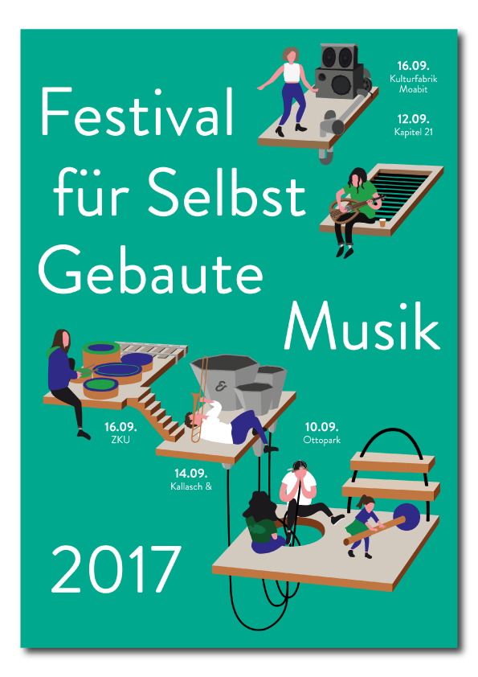
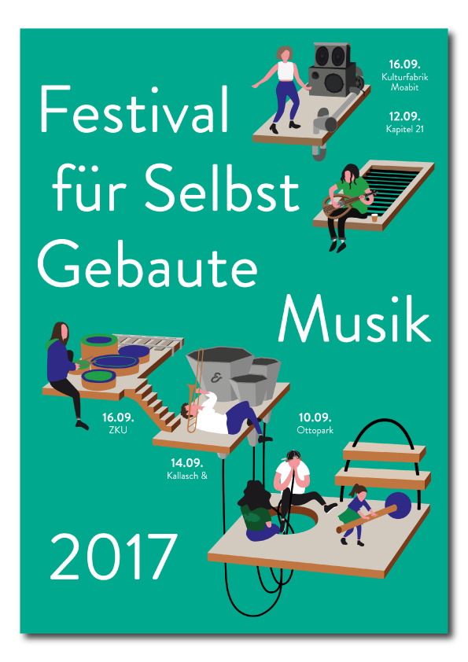
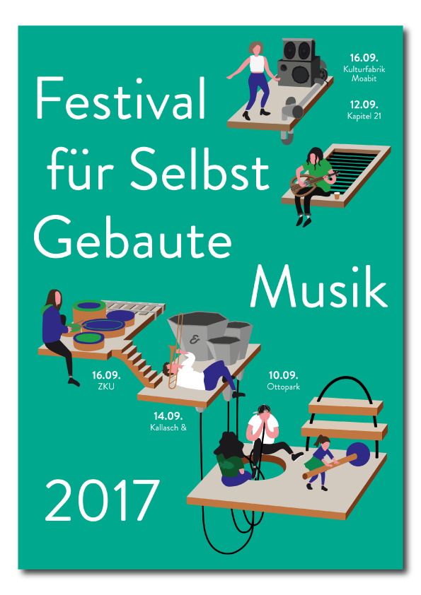
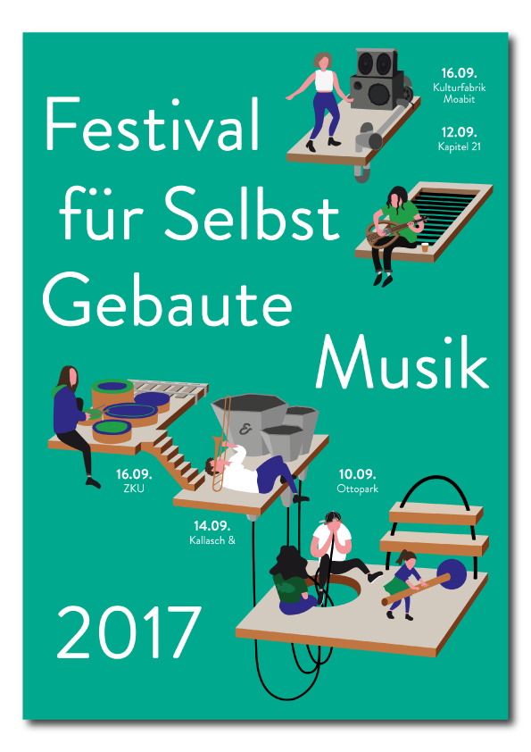
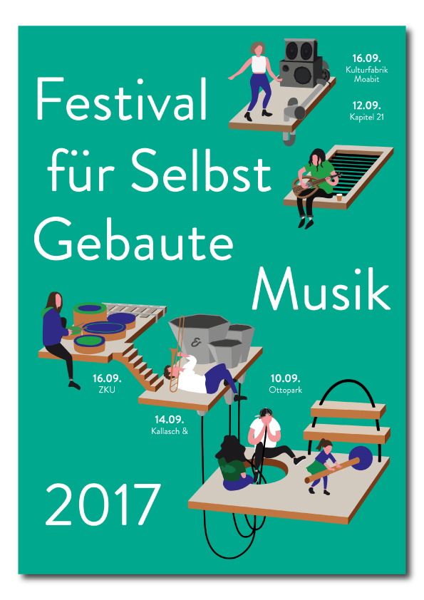
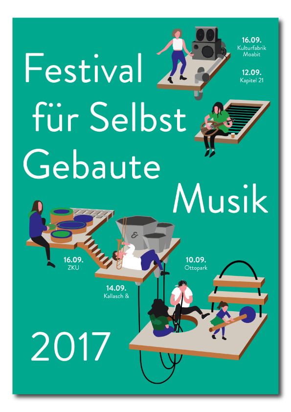

Festival für Selbstgebaute Musik
Three weeks at the drawing board, and the first draft of this poster identity came about: The Berlin Festival for Self-built Music is an annually held street fest coalescing musicians and artists solely playing on instruments they themselves built. Moreover, workshops and installations invite adults and children alike to interact in new ways with instruments, music and every day objects made into musical tools. I was commissioned to develop an imagery for the overall festival identity and meant to accompany the 2017 festivities.
 




